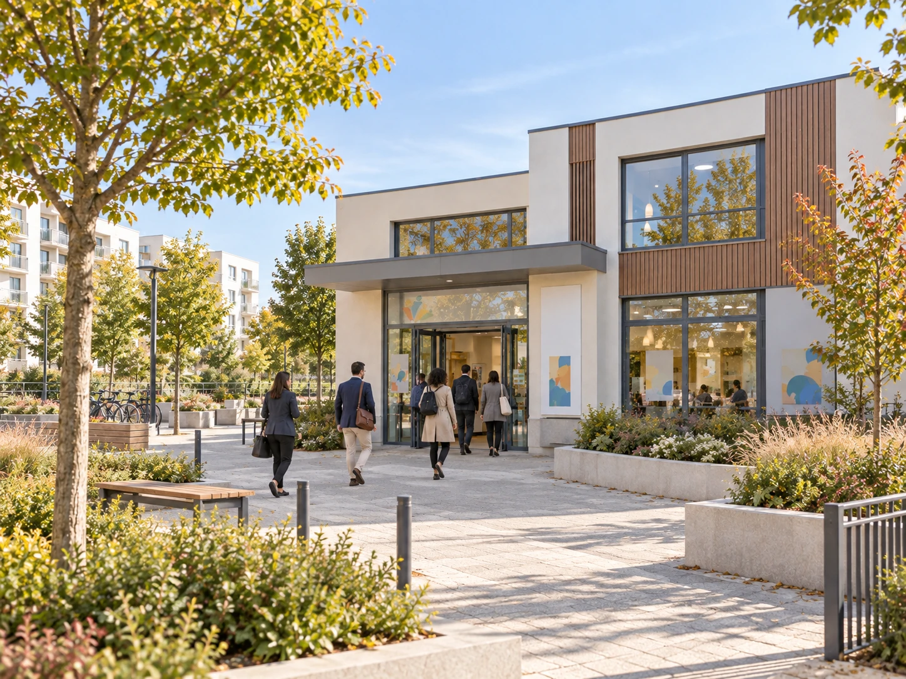
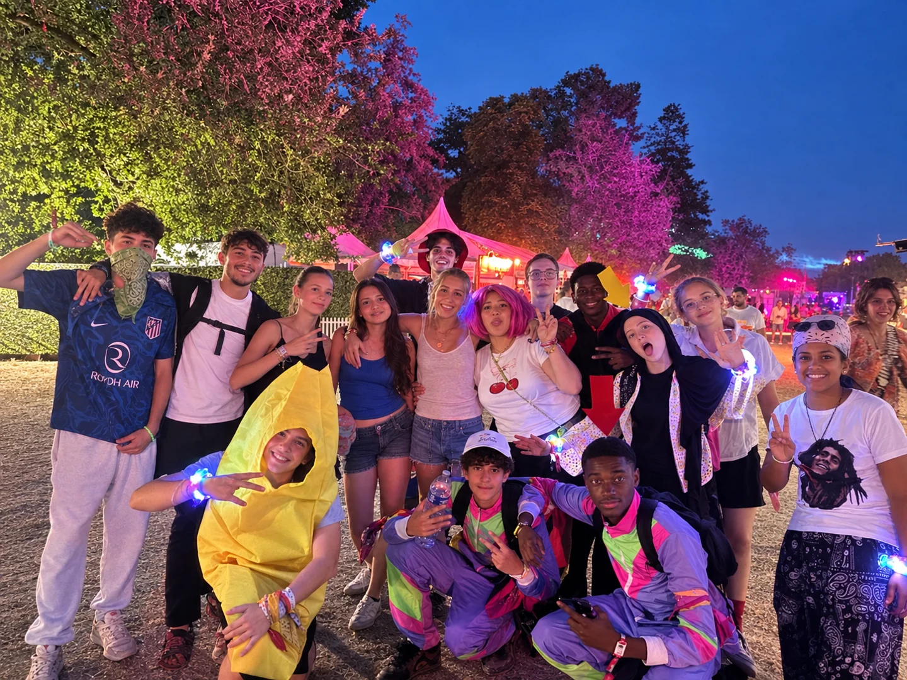
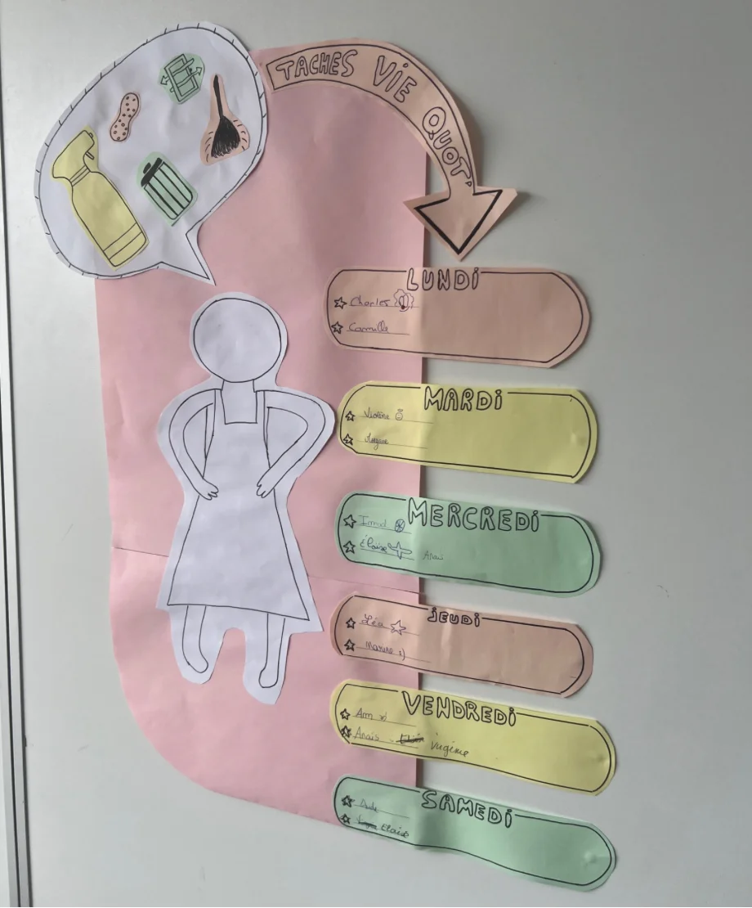
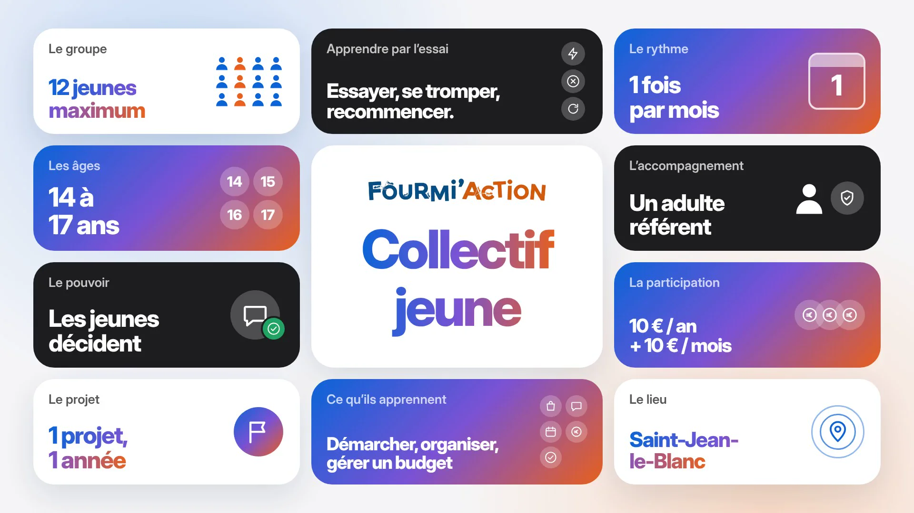

Nos actions
Former, intervenir et accompagner : des projets complémentaires en préparation pour faire vivre l’éducation populaire.

Projet d’interventions en structures
Fourmi’Action prépare des interventions de proximité au cœur des quartiers et des centres sociaux pour libérer la parole et renforcer le pouvoir d’agir des jeunes et des familles.
Les ateliers, échanges et projets collectifs envisagés ont pour objectif de permettre aux jeunes, aux familles et aux habitants de prendre la parole. Notre projet privilégie les démarches de proximité, dans les centres sociaux, les associations locales et les espaces de quartier.
Échanger sur votre projet
Projet de gestion d’accueils collectifs de mineurs
Fourmi’Action prépare un projet de gestion et d’accompagnement d’accueils de loisirs et de séjours éducatifs, conçus comme des espaces ouverts, solidaires et citoyens.
Notre projet d’accueils collectifs de mineurs (ACM) vise à créer des espaces de coopération, de créativité et de responsabilité. Il prévoit de faire participer les enfants et les jeunes aux choix de la vie collective dans un cadre sécurisant.
Échanger sur votre projet
Projet de formations BAFA
Fourmi’Action prépare un projet de formations BAFA fondé sur la pratique, la coopération et la sécurité. L’ouverture des inscriptions est conditionnée à la confirmation de l’habilitation officielle.
Notre projet de formation articule les savoirs, les savoir-faire et le savoir-être. La pratique, la gestion de groupe et la posture de l’animateur occupent une place centrale.
Découvrir le BAFA
Le Collectif jeunes
À Saint-Jean-le-Blanc, un collectif de 12 jeunes maximum, âgés de 14 à 17 ans, imagine et réalise ses propres projets sur l’année : une sortie, un événement, une action solidaire, un séjour ou un voyage.
Les jeunes proposent, discutent, choisissent et organisent ensemble, accompagnés par un adulte référent.
Découvrir le Collectif jeunes